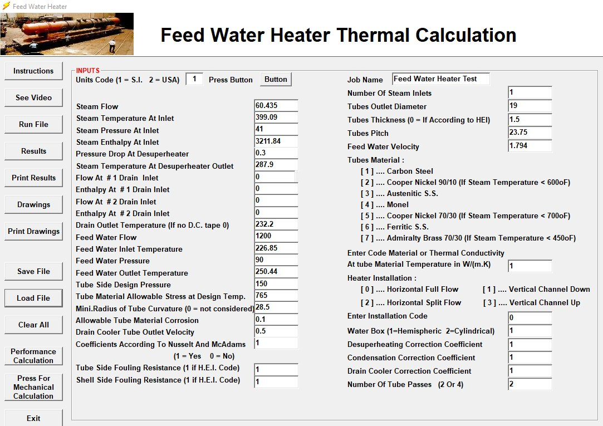
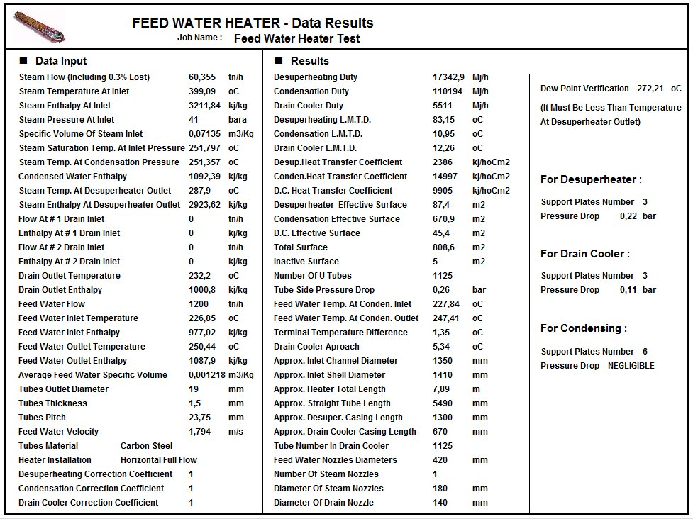
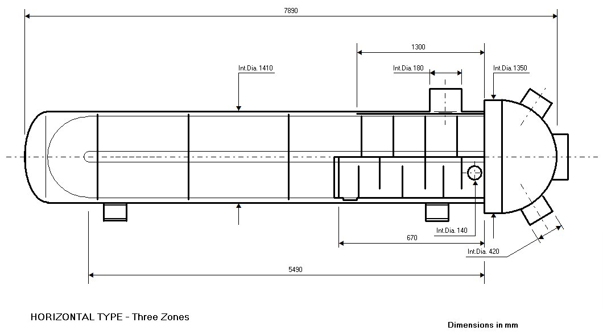
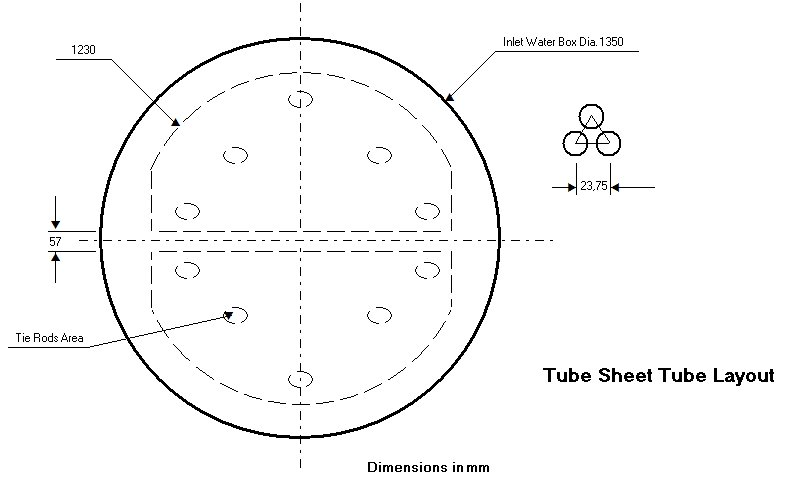
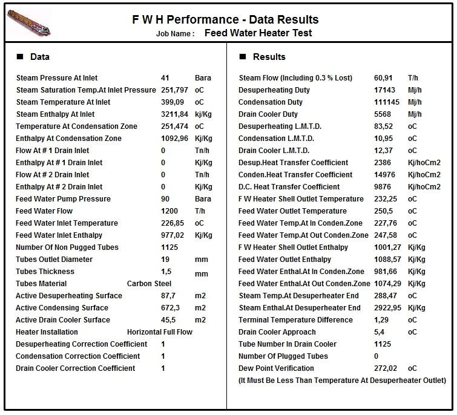
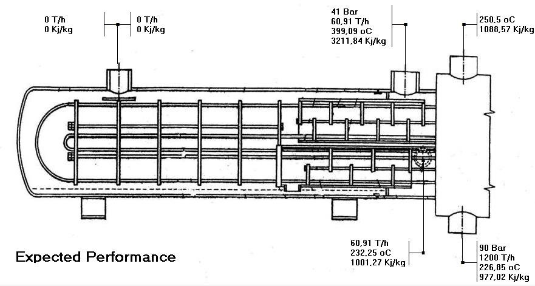
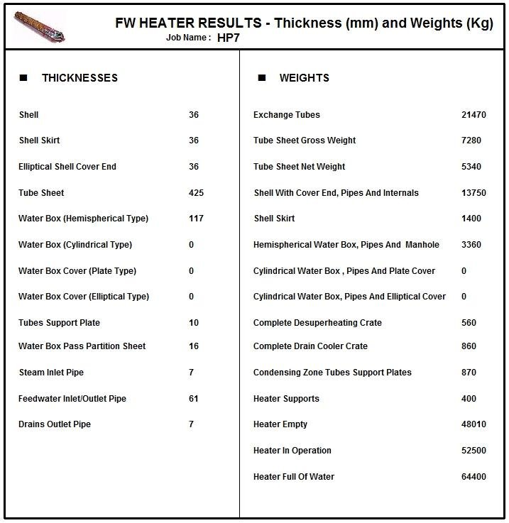

Feedwater Heater Design Software
Thermal and mechanical design of feedwater heaters per HEI standards, with drawings, weights and performance at other loads.
Thermal and mechanical design per HEI
This program performs the thermal and mechanical design of feedwater heaters based on HEI standards, with heat transfer coefficients for each zone (desuperheating, condensing and drain cooling) from classic correlations (Nusselt, McAdams) or proprietary methods. Full or split flow heaters are accommodated, as are horizontal and vertical units with channel up or down.
In addition to the performance results required to complete the heater specification datasheet, the program generates a heater drawing with the principal dimensions of the unit and of the tube support system, the tube layout and the results sheet for thickness and weights. It also calculates the heater performance for other thermal load conditions.
Data entry
The input window collects the steam conditions (flow, inlet temperature, pressure and enthalpy, pressure drop at the desuperheater), drains, feedwater flow, pressure and inlet and outlet temperatures, tube side design pressure, tube outer diameter, thickness and pitch, feedwater velocity, tube material (carbon steel, stainless steels, Monel, copper-nickel, admiralty brass), type of installation, water box type, number of tube passes and the correction coefficients of each zone.

Thermal results
The results sheet gives the duty, LMTD, heat transfer coefficient and effective surface of each zone, number of U tubes, tube side pressure drop, terminal temperature difference, drain cooler approach, shell and channel diameters, heater length, nozzle diameters, number of support plates and pressure drop of each zone, and the dew point verification at the desuperheater outlet.

Drawings
The program draws the heater with its main dimensions, the arrangement of the tube support plates of the desuperheater and drain cooler, and the tube sheet tube layout.


Performance at other loads
From the surfaces of the designed heater, the performance module calculates the expected results for other steam and feedwater conditions, and draws the heater with the expected inlet and outlet conditions.


Mechanical calculation and weights
The mechanical module calculates the thickness of the shell, shell skirt, cover end, tube sheet, water box and pipes, and the weights of tubes, tube sheet, shell, water box, internals and supports, up to the heater weight empty, in operation and full of water.

Documentation
See the complete example with every input and results window in the program documentation:
Feedwater Heater – full documentation (PDF)Related programs
- Feedwater Heater Performance – performance of an existing feedwater heater
- In-line Feedwater Heaters Performance – performance of a complete battery of up to six heaters
- Desuperheater – heaters with only a desuperheating surface
- Deaerator – thermal and mechanical design of deaerators
Condensers, feedwater heaters, deaerators, district heating, natural gas heaters and more, with a description of each program on the home page.
See all programs →